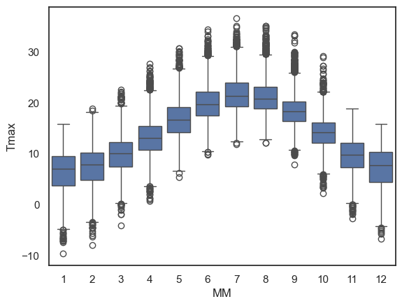
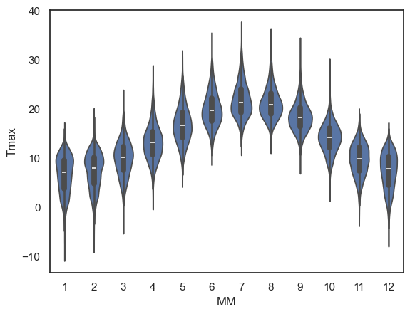
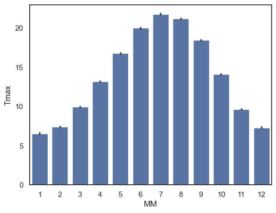
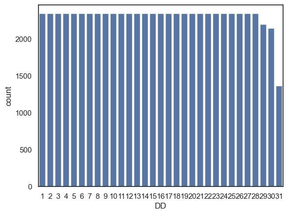
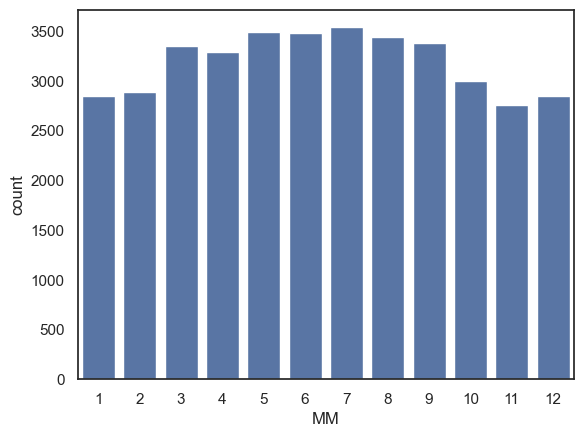
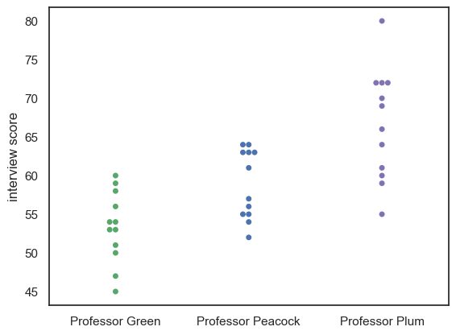
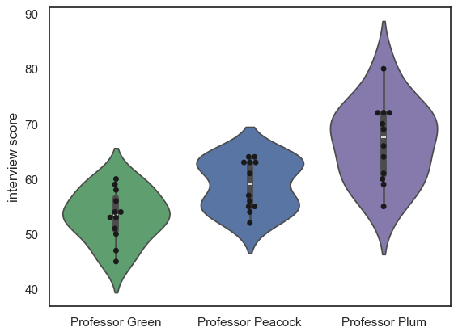
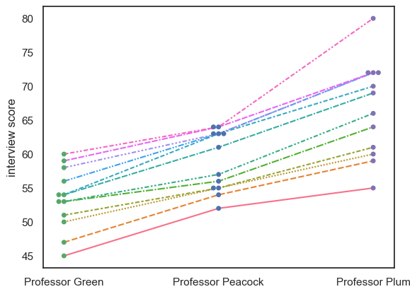
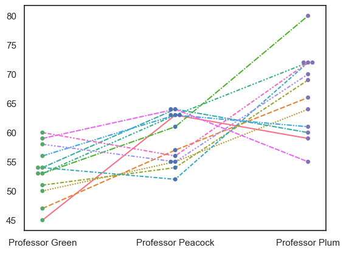
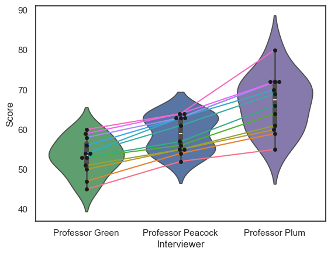

2.5. Comparing Categories#
If we want to compare data across categories, it can be useful to have a plot that highlights key features (eg, the mean/median and std/quartiles) while removing unnecessary detail. Sometimes less is more!
In this notebook we cover several Seaborn functions that can be used to visualise a comparison between groups or categories
To compare across categories, we can use:
sns.boxplot()- shows key descriptive statistics (median, quartiles, and potential outliers) for each category at a glance.sns.violinplot()- displays the full shape of each distribution while still summarising key statistics, giving a more detailed picture than the boxplot.
Here is a video introducing the boxplot and violin plot:
%%HTML
<iframe width="560" height="315" src="https://www.youtube.com/embed/u52t6AD5R_4?si=rMe0AfT005UpCPzc" title="YouTube video player" frameborder="0" allow="accelerometer; autoplay; clipboard-write; encrypted-media; gyroscope; picture-in-picture; web-share" referrerpolicy="strict-origin-when-cross-origin" allowfullscreen></iframe>
To compare a single summary statistic (such as the mean or count) across categories, we can use:
sns.barplot()- displays a summary statistic (typically the mean, though others can be specified) for each category, often with error bars showing variability.sns.countplot()- shows the number of observations in each category (essentially a bar chart of counts).sns.swarmplot()- plots individual data points for each category, letting you see both the distribution and the underlying sample size.sns.lineplot()- plot individual datapoints in each category with linking lines
Here is a video discussing plots for comparing a summary statistic across categories:
%%HTML
<iframe width="560" height="315" src="https://www.youtube.com/embed/tBeqZHHWWAI?si=L_opbBOjAYKjpfjL" title="YouTube video player" frameborder="0" allow="accelerometer; autoplay; clipboard-write; encrypted-media; gyroscope; picture-in-picture; web-share" referrerpolicy="strict-origin-when-cross-origin" allowfullscreen></iframe>
2.5.1. Oxford Weather example#
We will work with historical data from the Oxford weather centre, which has data for every day in Oxford since 1827!

Set up Python libraries#
As usual, run the code cell below to import the relevant Python libraries
# Set-up Python libraries - you need to run this but you don't need to change it
import numpy as np
import matplotlib.pyplot as plt
import scipy.stats as stats
import pandas as pd
import seaborn as sns
sns.set_theme(style='white')
import statsmodels.api as sm
import statsmodels.formula.api as smf
import warnings
warnings.simplefilter('ignore', category=FutureWarning)
Load and inspect the data#
Let’s load some historical data about the weather in Oxford, from the file “OxfordWeather.csv”. The code below will load this automatically from the internet.
weather = pd.read_csv("https://raw.githubusercontent.com/jillxoreilly/StatsCourseBook_2024/main/data/OxfordWeather.csv")
display(weather)
| YYYY | Month | MM | DD | DD365 | Tmax | Tmin | Tmean | Trange | Rainfall_mm | |
|---|---|---|---|---|---|---|---|---|---|---|
| 0 | 1827 | Jan | 1 | 1 | 1 | 8.3 | 5.6 | 7.0 | 2.7 | 0.0 |
| 1 | 1827 | Jan | 1 | 2 | 2 | 2.2 | 0.0 | 1.1 | 2.2 | 0.0 |
| 2 | 1827 | Jan | 1 | 3 | 3 | -2.2 | -8.3 | -5.3 | 6.1 | 9.7 |
| 3 | 1827 | Jan | 1 | 4 | 4 | -1.7 | -7.8 | -4.8 | 6.1 | 0.0 |
| 4 | 1827 | Jan | 1 | 5 | 5 | 0.0 | -10.6 | -5.3 | 10.6 | 0.0 |
| ... | ... | ... | ... | ... | ... | ... | ... | ... | ... | ... |
| 71338 | 2022 | Apr | 4 | 26 | 116 | 15.2 | 4.1 | 9.7 | 11.1 | 0.0 |
| 71339 | 2022 | Apr | 4 | 27 | 117 | 10.7 | 2.6 | 6.7 | 8.1 | 0.0 |
| 71340 | 2022 | Apr | 4 | 28 | 118 | 12.7 | 3.9 | 8.3 | 8.8 | 0.0 |
| 71341 | 2022 | Apr | 4 | 29 | 119 | 11.7 | 6.7 | 9.2 | 5.0 | 0.0 |
| 71342 | 2022 | Apr | 4 | 30 | 120 | 17.6 | 1.0 | 9.3 | 16.6 | 0.0 |
71343 rows × 10 columns
Have a look at the dataframe.
What do you think is contained in each column?
- Each row is a single day from 1827 to 2022. The columns YYYY,MM,DD give the date.
- The columns Tmax, Tmin and Tmean give information about the temperature
- We also have a record of the rainfall each day
Boxplot#
Say we want to plot the mean temperature in each month of the year. We have almost 200 datapoints for every date (and 30ish dates within each month, so 6000 measurements per month!)
We can summarise the distribution of temperatures in each month using a boxplot, some noteable parameters below:
data: the name of the dataset (e.g. a Pandas DataFrame) that contains the variable you want to plot.x: specifies which variable from your dataset that you want to appear on the \(x\) axisy: specifies which variable from your dataset that you want to appear on the \(y\) axishue: adds a categorical variable by which to divide the data into subgroups, plotting each subgroup in a different colorcolor,linecolor: controls the appearance of the boxes(fill color, border/dot colour).
sns.boxplot(data=weather, x="MM", y="Tmax")
plt.show()

The boxplot is designed to show a handful of key features of the data distribution:
The bottom and top of the box are the 25th and 75th quantiles (1st and 3rd quartiles)
The line inside the box is the 50th centile (the median)
the whiskers represent the robust range of the data
if there are no outliers, the whiskers reach to the smallest and largest values
any values more than 1.5 x IQR (interquartile range) are treated as outliers and plotted as individual dots
Less is more#
Using a simple boxplot for each month, we can easily see the trend across months for warmer weather in the summer and cooler weather in the winter.
Within each month we can also see some information about the distribution - for example:
Temperatures are more variable in winter and summer, than in autumn and spring
In winter, the distribution of temperatures has negative skew (there are some unusually cold years)
In summer the opposite is true, and there is a slight positive skew
Note: Skew is evident from the position of the median within each box and the placement of outliers but this will become clearer in a violinplot (see below)
2.5.2. Violinplot#
Using Python, you can make a slighly fancier version of the boxplot called a violinplot.
The violinplot shows the full distribution of data rather than the few summary statistics captured in a boxplot. The violin shapeshows a smoothed estimate of the data’s density mirrored on both sides of the central line, (essentially a KDE plot flipped on its side)
Let’s give it a try using the function sns.violinplot()
sns.violinplot(data=weather, x="MM", y="Tmax")
plt.show()

This is a nice compromise - still easy to “eyeball” the pattern across categories (in this case, across months) but giving plenty of detail within each category also
Note for example that the trend for:
negative skew in temperature in winter (outliers represent cold days)
positive skew in summer (outliers represent hot days)
…is much more clearly visible in the violin plot than in a box plot. The shape of each “violin” makes the asymmetry of the distribution clear at a glance.
Exercises#
Try the following quick exercise:
make a violin plot showing the minimum temperature in each month
# Your code here!
2.5.3. Barplot#
Sometimes, we want to show even less information, for example just the mean or median for each category.
We can do this using sns.barplot().
For example, let’s plot the mean value of the maximum daily temperature (Tmax) in each month:
sns.barplot(data=weather, x='MM', y='Tmax')
plt.show()

The height of each bar is the mean temperature in that month. If you’d prefer to summarise the data using a different statistic, you can change the function used via the parameter
estimator.The error bars show the 95% confidence interval around the mean by default, but this can also be adjust to display other measures of variability via the parameter
errorbar.
Exercises#
Try the following quick exercise:
# make a bar plot showing the mean rainfall in each month
2.5.4. Countplot#
Sometimes we are interested in how many data points fall in each category, rather than summarising via some statistic (e.g., mean, median). For this, we can use sns.countplot
One thing we can count from our weather dataset is the number of instances of each date (1st of the month, 2nd of the month, 3rd of the month….) although, I suppose the results won’t be especially surprising…
sns.countplot(data=weather, x='DD')
plt.show()

Another way we could use sns.countplot() is by creating a dataframe that contains only days fulfilling some criterion (eg, days with no rain) and then make a countplot based on this new dataframe:
Note You can achieve the same result in a single line of code by applying the filter directly instide the plotting function: sns.countplot(data=weather.query('Rainfall_mm == 0'), x='MM').
drydays = weather.query('Rainfall_mm == 0') # creates a whole new dataframe with only the 0mm rainfall days
sns.countplot(data=drydays, x='MM') # then count the number of days in each month
plt.show()

Exercises#
Can you use sns.countplot() to show the number of days with frost (Tmin < 0) in each month?
# your code here
2.5.5. Swarmplot#
For smaller datasets, it can be helpful to plot individual datapoints instead of, or as well as, a plot of the distribution.
Let’s look at an example using a small, made-up dataset containing interview scores for 10 Oxford applicants.
InterviewScores = pd.read_csv("https://raw.githubusercontent.com/jillxoreilly/StatsCourseBook_2024/main/data/CluedoInterview.csv")
display(InterviewScores)
| Professor Green | Professor Peacock | Professor Plum | |
|---|---|---|---|
| 0 | 45 | 52 | 55 |
| 1 | 47 | 54 | 59 |
| 2 | 50 | 55 | 60 |
| 3 | 51 | 55 | 61 |
| 4 | 53 | 56 | 64 |
| 5 | 53 | 57 | 66 |
| 6 | 54 | 61 | 69 |
| 7 | 54 | 63 | 70 |
| 8 | 56 | 63 | 72 |
| 9 | 58 | 63 | 72 |
| 10 | 59 | 64 | 72 |
| 11 | 60 | 64 | 80 |
Each applicant was assessed by three interviewers, and we want to visualise their scores. Given that this is a small data set we may wish to plot every students’ scores from each interviewer.
We can do this using a swarmplot:
sns.swarmplot(data=InterviewScores, palette=['g','b','m']) # we may as well make the colours meaningful ;-))
plt.ylabel('interview score')
plt.show()

Maybe it would be nice to add a violinplot for each distribution as well:
sns.violinplot(data=InterviewScores, palette=['g','b','m'], fill=True) # we may as well make the colours meaningful ;-))
sns.swarmplot(data=InterviewScores, palette=['k','k','k']) # use black dots for visibility
plt.ylabel('interview score')
plt.show()

Note-
We can see that each professor gives a different mean and range of scores, but we can’t see how much agreement there is between the professors.
2.5.6. Lineplot#
sns.lineplot(data = df.T)
The data set contains three scores for each student (we can think of this as a repeated measures design), so an important question to ask is whether the professors were consistent:
Professor Plum gives higher and more spread-out scores othan Professor Green
But do students who score well with Professor Plum also score well with Professor Green?
Currently we can’s answer that question, as we can see the students’ individual scores from each professor, but we don’t know which dot in Professor Plum’s column corresponds to which dot in Professors Green and Peacock’s columns.
We can use the function sns.lineplot() to help us here:
sns.swarmplot(data=InterviewScores, palette=['g','b','m'])
#sns.violinplot(data=InterviewScores, palette=['g','b','m'], fill=False )
sns.lineplot(data=InterviewScores.T, legend=False)
plt.ylabel('interview score')
plt.show()

Note-
We can see that, despite the different distributions of marks for each Professor, the students who do well with one professor tend to do well with the others; in other words the interviewers are consistent in their ranking of the students, if not in their numerical marks.
For comparison, an inconsistent dataset would look like this:
InterviewScoresShuffle = pd.read_csv("https://raw.githubusercontent.com/jillxoreilly/StatsCourseBook_2024/main/data/CluedoInterviewShuffle.csv")
sns.swarmplot(data=InterviewScoresShuffle, palette=['g','b','m'])
#sns.violinplot(data=InterviewScoresShuffle, palette=['g','b','m'], fill=False )
sns.lineplot(data=InterviewScoresShuffle.T, legend=False)
plt.show()

Note on Transpose (and maybe too much info for now…)#
df.T
To get a lineplot of categorical data, the syntax is a little fiddly. If we just run sns.lineplot() on our dataframe, it will try to plot each column as a line.
However, repeated measures data such as these are most often stored as wideform data . This means, each row is an individual (interviewee), and each column is a measurement for that given individual (scores from different professors).
In our case, we actually want to plot each row as a line (one per interviewee), not each column.
To do this, we can transpose the dataframe effectively swapping the rows and columns using .T attribute. This tricks sns.lineplot() into plotting each row (individual person) as aa line, Here is the transposed dataframe:
InterviewScores.T
| 0 | 1 | 2 | 3 | 4 | 5 | 6 | 7 | 8 | 9 | 10 | 11 | |
|---|---|---|---|---|---|---|---|---|---|---|---|---|
| Professor Green | 45 | 47 | 50 | 51 | 53 | 53 | 54 | 54 | 56 | 58 | 59 | 60 |
| Professor Peacock | 52 | 54 | 55 | 55 | 56 | 57 | 61 | 63 | 63 | 63 | 64 | 64 |
| Professor Plum | 55 | 59 | 60 | 61 | 64 | 66 | 69 | 70 | 72 | 72 | 72 | 80 |
… compare to the original, non-transposed one:
InterviewScores
| Professor Green | Professor Peacock | Professor Plum | |
|---|---|---|---|
| 0 | 45 | 52 | 55 |
| 1 | 47 | 54 | 59 |
| 2 | 50 | 55 | 60 |
| 3 | 51 | 55 | 61 |
| 4 | 53 | 56 | 64 |
| 5 | 53 | 57 | 66 |
| 6 | 54 | 61 | 69 |
| 7 | 54 | 63 | 70 |
| 8 | 56 | 63 | 72 |
| 9 | 58 | 63 | 72 |
| 10 | 59 | 64 | 72 |
| 11 | 60 | 64 | 80 |
For longform data, that is, data where each row represents a single interview event, we can simply use the hue property of sns.lineplot() to get separate lines, no need to transpose anything.
Here is the interview dataset in longform:
InterviewScoresLongform = pd.read_csv("https://raw.githubusercontent.com/jillxoreilly/StatsCourseBook_2024/main/data/CluedoInterviewLongform.csv")
InterviewScoresLongform
| studentID | Interviewer | Score | |
|---|---|---|---|
| 0 | 71215 | Professor Green | 45 |
| 1 | 71591 | Professor Green | 47 |
| 2 | 71616 | Professor Green | 50 |
| 3 | 72220 | Professor Green | 51 |
| 4 | 74952 | Professor Green | 53 |
| 5 | 75323 | Professor Green | 53 |
| 6 | 75524 | Professor Green | 54 |
| 7 | 75716 | Professor Green | 54 |
| 8 | 76917 | Professor Green | 56 |
| 9 | 77180 | Professor Green | 58 |
| 10 | 77540 | Professor Green | 59 |
| 11 | 78664 | Professor Green | 60 |
| 12 | 71215 | Professor Peacock | 52 |
| 13 | 71591 | Professor Peacock | 54 |
| 14 | 71616 | Professor Peacock | 55 |
| 15 | 72220 | Professor Peacock | 55 |
| 16 | 74952 | Professor Peacock | 56 |
| 17 | 75323 | Professor Peacock | 57 |
| 18 | 75524 | Professor Peacock | 61 |
| 19 | 75716 | Professor Peacock | 63 |
| 20 | 76917 | Professor Peacock | 63 |
| 21 | 77180 | Professor Peacock | 63 |
| 22 | 77540 | Professor Peacock | 64 |
| 23 | 78664 | Professor Peacock | 64 |
| 24 | 71215 | Professor Plum | 55 |
| 25 | 71591 | Professor Plum | 59 |
| 26 | 71616 | Professor Plum | 60 |
| 27 | 72220 | Professor Plum | 61 |
| 28 | 74952 | Professor Plum | 64 |
| 29 | 75323 | Professor Plum | 66 |
| 30 | 75524 | Professor Plum | 69 |
| 31 | 75716 | Professor Plum | 70 |
| 32 | 76917 | Professor Plum | 72 |
| 33 | 77180 | Professor Plum | 72 |
| 34 | 77540 | Professor Plum | 72 |
| 35 | 78664 | Professor Plum | 80 |
… and here is how we plot it:
sns.swarmplot(data=InterviewScoresLongform, x='Interviewer', y="Score", color = 'k')
sns.violinplot(data=InterviewScoresLongform, x='Interviewer', y="Score", palette=['g','b','m'])
sns.lineplot(data=InterviewScoresLongform, x='Interviewer', y="Score", hue=InterviewScoresLongform.studentID.astype(str), legend = False)
plt.show()
